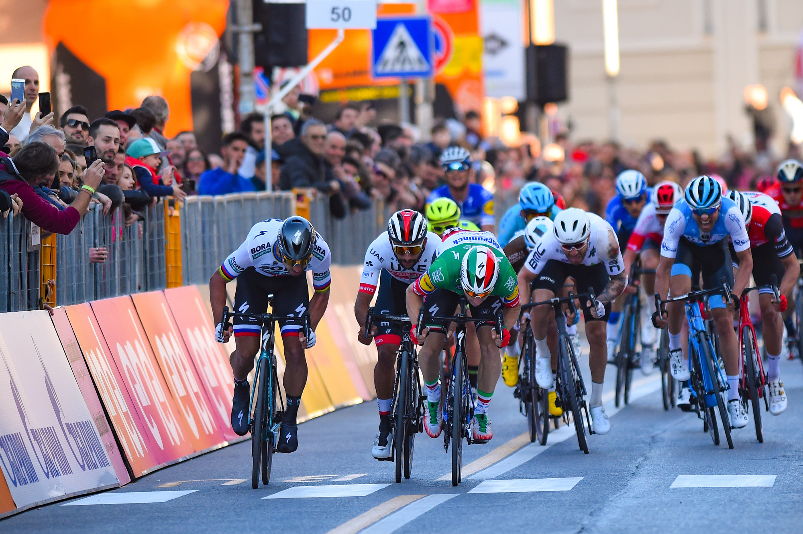

Second in Tirreno-Adriatico stage 3 sprint, condition keeps improving slowly
I knew it wouldn’t be an easy sprint but I wanted to give it a try. Although my form is still not at the level it should be right now, I was feeling quite better today. I’d like to thank the rest of the team for their great work, especially in the final kilometers where they put me in a perfect position. It was a nice sprint and close finish, something to be expected when you are against strong sprinters like Gaviria and Viviani. I’m improving day by day and in every stage, we will try to get the best result we can. (Photos Luca Bettini) BORA-hansgrohe.
Thrills throughout the peloton…
The 2019 Tour de France podium, with the youngest winner of the Yellow Jersey in the history of the race, Egan Bernal, ahead of his Ineos team mate Geraint Thomas and Dutchman Steven Kruijswijk, was constructed throughout three weeks of twists and turns. Julian Alaphilippe’s long period in yellow of added unexpected excitement, as did Thibault Pinot’s dazzling display before he retired two days from Paris. It was mission business as usual for Peter Sagan, who won his record setting 7th green jersey, while the sprinters had to take, in some part, a back seat to Caleb Ewan, who scored three stage victories in his Tour debut, including the most prestigious one on the Champs-Elysées. Romain Bardet, not quite in the hunt for the overall win (15th), still finished his 7th Tour on the podium and on a high note, with his first polka-dot jersey.
The French on a mission
The wait continues. No one still knows the name of the eventual successor to Bernard Hinault, the last French rider to win the Grande Boucle in 1985. But all throughout the 2019 edition, two Frenchmen put themselves in a position to be a more and more credible contender, albeit in two very different ways. One of today’s top specialists when it comes to one-day classics and stage victories, Julian Alaphilippe seized his first opportunity, near the town of Epernay, slipping on the Yellow Jersey. No one thought he would wear it for such a long time. Although he relinquished it to Giulio Ciccone for a brief moment, the French rider quickly replied at Saint-Etienne, where he retook the overall lead, with the perspective of remaining in Yellow just until the Pyrenees. He wasn’t satisfied to just hold on to the GC lead and increased his advantage over Geraint Thomas after the first major mountain range. He then set best time on the Pau time trial, stayed with the favourites on the Col du Tourmalet and barely flinched on the slopes of Prat-d’Albis before the rest day. Julian Alaphilippe eventually weakened in the Alps, on a terrain where he logically ceded his place to Egan Bernal, while an entire nation or nearly so seemed to be pushing him to Paris in that same jersey.
Meanwhile, the best chance for France was Thibaut Pinot, who was forced to ride at a distance after losing 1:40 when he got caught out by crosswinds on the Albi stage, although his chance to turn the race in his favour seemed quite real after his forceful ride up the slopes of the Col du Tourmalet. Fourth overall as the Tour reached the Alps, the French rider was among the favourites after displaying top form and a conquering temperament. And yet it was his form that stopped him, in this case a muscle tear in his left leg that left him no choice but to retire on the Tignes stage that could have been his day to star. But it was not to be for Pinot.
A new podium was produced on two shortened but decisive stages, on route towards Tignes and Val Thorens, with Egan Bernal in the role of a Columbian super-hero, followed by his Ineos team mate Geraint Thomas and Steven Kruijswijk, whose Jumbo-Visma team was omnipresent on the Tour. It was they who managed to eject Julian Alaphilippe from the podium, while he was still 2nd overall at the foot of the final climb to the highest ski station in Europe.
Sagan, the record
There was no fight for the green jersey! Sure, the classification was led for a day by the winner of the opening stage, Mike Teunissen, but it was Peter Sagan who slipped on the green jersey the following day and never took it off just until the podium on the Champs-Elysées. Once again, the Slovak focused all his attention on collecting points as he rode in the breakaways to fight for the intermediate sprints, strung together strong finishes behind the fastest sprinters to score everywhere he could. An astute connoisseur of the subtleties of this competition, the three-time World Champion only won one stage, in Colmar, but finished nine stages in the Top 5.
In all, Sagan won by a commanding 68-point advantage over Caleb Ewan, and broke Erik Zabel’s record in claiming his seventh green jersey in Paris. Along the way, the 12th stage won by the Bora-Hansgrohe rider put him on equal footing with the former German sprinter, which also ties him with two other legendary sprinters, Robbie McEwen and Mario Cipollini.

The dots for Bardet
The polka-dot jersey had a distinctly Belgian accent right from the start in Brussels. First with Greg Van Avermaet, who went in search of it on the Mur de Grammont where his outstanding Flandrien qualities stood out. Then with Tim Wellens, who found a role that ideally suited his all-rounder make up, capable of battling in the breakaways on rolling stages. Employing clever tactics, the member of the Lotto-Soudal team maintained the advantage in the King of the Mountains classification for 15 days, which none of his compatriots had done since Lucien Van Impe.
Wellens though reached his limits when the race entered the Alps. Although he managed to join the breakaway that saw him to score his last points as he passed the Col de Vars in the lead, it was Romain Bardet who made the most of the Valloire stage to take the lead in the climbers classification. The two remaining stages promised a wide-open battle for the polka-dot jersey, but they being shortened helped the Frenchman, who was not at peak form, to easily defend his position. He admitted luck was on his side to allow him to keep the polka-dot jersey and step on the podium on the Champs-Elysées for the fifth time in seven Tour participations.
Ewan, up to the challenge
They call him the “Pocket Rocket” due to his diminutive size and his explosive style that are reminiscent of Mark Cavendish, the Tour stage win leader, still competing, with 30 victories. Caleb Ewan was chomping at the bit to participate in his first Tour de France. He was even eyeing a strong start, with a Yellow Jersey guaranteed to go to a sprinter in Brussels. But the Australian’s debut was more laborious than planned. Always close but not really in contention, he took four top three results and as many frustrations in the mass sprints in Brussels (3rd), Nancy (3rd), Chalon-sur-Saône (2nd) and Albi (3rd), before stepping on to the stage-winner podium in Toulouse.
It was in the Haute-Garonne prefecture where Ewan’s trajectory joined that of “Cav”, who also began to win Tour stages at the age of 25, in 2008. Winner in Toulouse like Cavendish, the young Australian did it again a few days later in Nîmes, where his role model did the same 11 years earlier. Above all, Caleb Ewan finished his Tour de France in grand style on the Champs-Elysées. During his first visit to the City of Light, when he was just 17, he went to the Champs Elysées, that avenue that is so very special to all the sprinters, promising to, one day, raise his arms. That's done, at the first attempt. And Caleb Ewan has fired the warning shot in the direction of Peter Sagan. He is now the Slovak’s most serious rival for the green jersey in the coming years.
Richard Carapaz, first Ecuadorian winner of the Giro d'Italia
Ecuador’s Richard Carapaz has won the 102nd Giro d’Italia as he defended his lead with composure to retain an advantage of 1’05” over Vincenzo Nibali while Primoz Roglic regained his spot on the podium at the expense of Mikel Landa. American rider Chad Haga won the closing time trial in Verona ahead of Belgians Victor Campenaerts and Thomas De Gendt.
Press conference
Giro d’Italia winner Richard Carapaz said in the press conference: “I want to enjoy this victory with my wife, my kids and speak on the phone with my parents. I’m very proud of what I achieved. I’m delighted to make my dream of winning a Grand Tour come true. We must never forget our childhood dreams. They can always become reality with hard work and determination. In my four years in European cycling, I realized that opportunities have to be caught. The thirty seconds I gained on stage 15 were fundamental. I profited from [Vincenzo] Nibali and [Primoz] Roglic watching each other. That’s where the Giro was decided. For me, it’s only the beginning I think. We always dream for more.”
Second placed Vincenzo Nibali said: “This morning, I knew it would be extremely difficult to win the Giro d’Italia. But I thought I could do a good time trial. So I gave it all until the end. Second at the Giro is still a good result, especially thinking that six months ago, I was down with a big back pain after the crash at the Tour de France. To be back fighting for the overall victory in a Grand Tour is something positive.”
Third placed Primoz Roglic said: “It’s super nice to end up on the final podium after the different problems I’ve had. I felt tired today but after I badly suffered from my stomach in the mountains, I didn’t think I’d be competitive in this time trial.”
The stage winner Chad Haga said in the press conference: “It’ll take a bit longer to realize but it’ll come. My victory is of course a consolation price after Tom Dumoulin pulled out. I came in top form but it was a support form. During the time trial, I kept thinking this is what Tom would have been doing today if he was here. I thought today I had a real possibility because the course suited me very well and for sure better than the one of stage 9. As an American, I feel very proud of winning a stage at the Giro d’Italia.”
Points Classification winner Pascal Ackermann said: “The atmosphere in the arena is fabulous. I have never experienced anything like this before. It makes me feel special about the getting the Cyclamen jersey, which was a childhood dream. Coming to the Giro, I was only hoping for a victory but after I won two stages, it looked worth trying to go for the jersey as well. But I was very disappointed after my crash. I lost a lot of points but we kept working on getting it back. I wasn’t expecting what I’ve experienced over these three weeks and I’m just happy about everything.”
King of the Mountains Giulio Ciccone said: “It’s been a beautiful Giro, even a bit above my expectations. It all started with trying to get it riding the San Luca flat out on day one, and I’ve had the jersey almost all the time, except when my roommate Gianluca Brambilla got it for a day. It was worth fighting every day and getting the Mortirolo stage win as well.”
Best young rider Miguel Angel Lopez said: “The result at this Giro is a bit less than what we hoped for but it wasn’t because of bad legs, it’s been because of bad luck. But it’s fine because we’ve battled through and given our best as always. For one year, I’ve been thinking that I can win the Giro one day and I’ll come back for winning it.”
The time and the era of Southamerica in the grand tours
With Richard Carapaz’s victory in the Giro d’Italia and Egan Bernal’s victory in the Tour de France, Latin American riders have two Grand Tours under their belts in 2019, equalling almost those accumulated by their predecessors over the last three decades (Herrera’s La Vuelta 1987 and Nairo Quintana’s Giro 2014 and La Vuelta 16). The 74th edition of La Vuelta could set a new record for the continent and Nairo Quintana, Rigoberto Urán, Miguel Ángel López and Richard Carapaz are some of the riders hoping to win it.
Chris Froome, Geraint Thomas and Simon Yates: in 2018, three different British riders were able to win the three Grand Tours of the annual cycling calendar. An impressive record, unprecedented until now for a single country, and a true challenge to replicate. But what will happen in 2019? Ecuadorian rider Richard Carapaz and Colombian rider Egan Bernal have wiped the British slate clean and have set the podiums of Verona and Paris to the Latin-American rhythm, as they wait for Madrid to crown the winner of La Vuelta 19 (74th edition, which will be held from the 24th of August to the 15th of September).
Back in his hometown of Zipaquirá to celebrate this historical triumph, Bernal will not be the first Colombian to win two Grand Tours in the same season, after becoming the first cafetero to ride through the Champs Elysées wearing yellow. But his countrymen are firm candidates for the final victory after three weeks and almost 3300 km of competition. After two and a half months of not competing since the Giro, Richard Carapaz, whose personal history is split between Ecuador and Colombia, showed signs of strong form in the Vuelta a Burgos (3rd) before heading down to the Costa Blanca for the start of La Vuelta 19, departing from Salinas de Torrevieja.
Heading the Movistar team, Carapaz could become the fourth rider in history to win both the Giro and La Vuelta in the same season; the first since Alberto Contador in 2008. The Ecuadorian participated in his first grand tour in La Vuelta 17 (he came 36th) and, following his surprising and unexpected victory in the Giro 2019, is now a favourite to win La Vuelta. His triumph in Italy showed his capacity for making the most of the opportunities that present themselves in any type of terrain, bringing out the Movistar team’s best strategic side, and he now returns to La Vuelta better-prepared.
The team from Navarre, that will depend on the veteran rider from Murcia, Alejandro Valverde, also has the last Latin La Vuelta winner in its ranks: Nairo Quintana, crowned in Madrid in 2016. Even though Bernal snatched his sueño amarillo from him, the ‘Cóndor de Tunja’ continues to be the pioneer who paved the way for a new generation of riders who wish to fulfil the dreams of Lucho Herrera and Fabio Parra. In the last Tour de France, Quintana showed his strength and pride by obtaining an undisputable stage victory alone after climbing the Col du Galibier.
In Paris, Quintana admitted the “pride” he felt watching Bernal wear the yellow jersey for Colombia. He also pointed out how hard it is for Latin American riders to compete beyond the Atlantic Ocean and head to Europe. In his case, he proved it by winning La Vuelta (2016), the Giro (2014) and by being the only Latin American rider to make it to podium in all three Grand Tours. Within his hands (and his legs) remains the possibility of writing a new page in La Vuelta’s history and in his continent’s victory tally before leaving the Movistar team, which sponsored him in his European beginnings back in 2012.
Three weeks separate the birth of Quintana from that of Esteban Chaves, who leaves behind the physical misery of his recent seasons in order to defend the ambitions of Mitchelton-Scott. The Australian team hopes that the smiley Colombian succeeds his colleague Simon Yates on the final Spanish podium. Absent from the last edition of La Vuelta, Chavito accompanied Quintana on the Madrid podium in 2016 (3rd), a year after obtaining his first stage victories in a Grand Tour, on the summits of Caminito del Rey and the Cazorla Mountain Range.
Among the veterans of Colombian cycling, Rigoberto Urán (EF Education First) participates in his sixth La Vuelta at just 32 years of age. The Spanish grand tour has been a constant frustration for Rigo (Warren Barguil beat him to the finish-line by just millimetres on the 16th stage of La Vuelta 13, as determined by the photo-finish). Last year, the experienced Colombian proved to be in better shape by placing 7th in the general classification and showed amazing regularity in the mountains, as well as admirable legs during the final week (he finished 4th and 5th in the two last mountain stages held in Andorra).
In the ranks of the American team, will be two young Colombian talents: Daniel Martínez, who missed the Tour due to an unfortunate fall during training in the month of June, and Sergio Higuita, who joined the ranks of the Euskadi Foundation this season but took the leap into the World Tour category in May. Since then, he has accumulated a 2nd prize in the Amgen Tour of California and a 4th place in the Tour of Poland, his two only races with the EF Education First Team. For his first Grand Tour, Higuita will try to avoid the traps that ended the opportunities of Miguel Ángel López during the first week of La Vuelta 16. The Colombian climber discovered three-week races and suffered several falls at the start of the competition. Since then, his progress has been incredible: 8th with two stage victories in 2017 and 3rd in La Vuelta 18. “This third place was the least we could have hoped for”, he declared at the time.
The old continent will present another ex La Vuelta winner, Italian Fabio Aru. The Jumbo-Visma team brings together leaders of the Giro and the Tour: Primoz Roglic (3rd in Italy), who may become the first Slovenian to win a Grand Tour and Steven Kruijswijk, who hopes to improve his 3rd place in the Tour’s general classification and thus celebrate the 40th anniversary of Joop Zoetemelk’s La Vuelta victory (1979), as well as Jan Janssen’s victory (1967) – the two only Dutch triumphs in the history of La Vuelta. But before that, they will have to face the Latin American army that seems to have taken over the reins of this year’s Grand Tours.